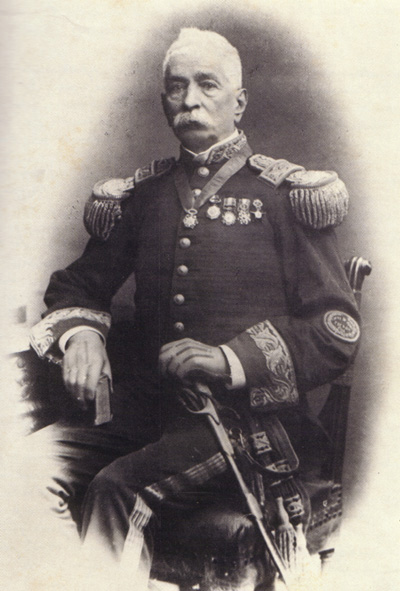

Historia
Fue fundada un 11
de noviembre de 1905 por Eduardo de
Chapeaurouge -destacado agrimensor,
que cursó estudios en Europa y Estados Unidos, fundó varias ciudades en La Pampa y provincias vecinas-
con amplias ventajas y posibilidades de desarrollo para su época ya que su ubicación geográfica se
planificó
en relación con los cruces de vías de ferrocarril (Oeste y Pacífico). Fue el mismo Chapeaurouge, quien
diagramó
la ciudad que posee pocas diagonales, calles amplias y una avenida principal llamada General San Martín.
El nombre de la ciudad es en alusión al General Eduardo Gustavo Pico, quien fue gobernador de la
provincia
(en ese entonces territorio nacional) entre los años 1891 y 1899. Desde mediados del siglo xx, General
Pico
está atravesando por un importante proceso de crecimiento demográfico. Su intendencia fue fundada en
1912,
siendo su primer intendente Alfredo Bo, y desde diciembre de 2019 la intendente es Fernanda Alonso. El
único
diario impreso de la ciudad es La Reforma, además cuenta con diversos diarios digitales.
